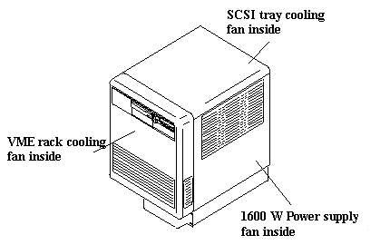
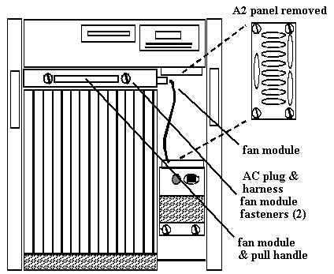

Operating Documentation
Direction 5112972-800, Rev# 2
CT Planned Maintenance Procedures
Operating Documentation |
| Required Persons | Preliminary Reqs | Procedure | Finalization |
|---|---|---|---|
| 1 | Timing Not Applicable | 15 mins | Timing Not Applicable |
Procedure Effectivity:
| Assembly: | COMPUTER |
| Subassembly: | Computer Fans |
| Purpose: | Check That All Fans Work |
| Last Revised: | July 1995 |
| Item | Qty | Effectivity | Part# | Manufacturer | |
|---|---|---|---|---|---|
| Standard FE Toolkit | 1 | - | - | - | |
| Item | Qty | Effectivity | Part# | Manufacturer | |
|---|---|---|---|---|---|
| VME Rack Fan | (if required) | - | 46-307090P23 | - | |
| SCSI Tray Fan | (if required) | - | 46-307681P1 | - | |
| 1600 W Power Supply | 1 (if required) | - | 46-307090P1 | - | |
Shutdown the computer and switch-off the power. The front view of the computer is shown in Illustration 1.
Illustration 1: Computer Front View

Remove the front computer cover. Refer to Illustration 2.
Illustration 2: Computer Front View (Cover Removed)

Remove the GAI serial connector panel (A2).
Locate and remove the AC power plug at fan-module.
Remove the fan-module fasteners.
Slowly slide the fan-module out of the chassis.
| CUT HAZARD. | |
| ROTATING FANS CAN CAUSE LACERATIONS. | |
| Keep body parts clear of fans to avoid personal injury. |
VERY CAREFULLY turn the computer power on and make sure that all the fan-module fans (6) start and run normally.
Turn the computer power off and allow fans to stop.
Unplug the fan-module, reassemble the components, plug the fan-module back, and tighten all the fasteners.
The 1600W power supply has a fan inside.
Make sure that the fan works. If it fails, the power supply needs replacement.
The SCSI is enclosed and has it own cooling fan mounted at the top corner of the back of the tray.
Make sure that the fan is working (blowing out of the tray exhaust) when the power is on.
Repair or replace any fans that do not work.
No finalization required.